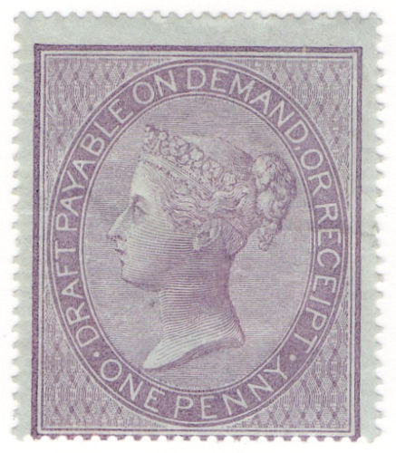
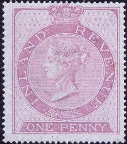
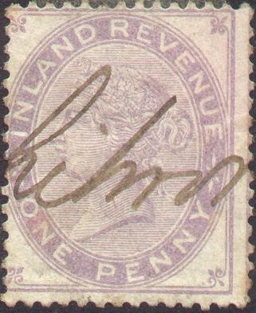
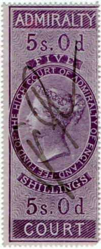
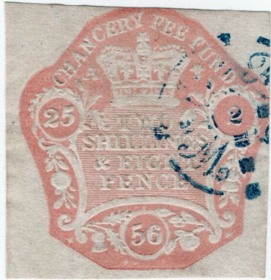
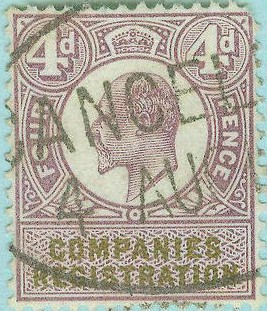
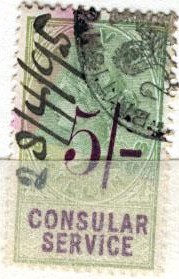
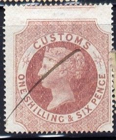

{kind=link}
{kind=link}
{kind=link}

(Fiscal stamp, postally used (?), reduced size)
Return To Catalogue - Great Britain - Great Britain Fiscal stamps ,part 2
Note: on my website many of the
pictures can not be seen! They are of course present in the
catalogue;
contact me if you want to purchase it.
Many fiscal stamps were issued for Great Britain. I hereby give a list of the different purposes: admirality, bankruptcy court, board of agriculture, chancery court, civil service, common law courts, companies registration, consular service, contact note, copyhold, customs, district audit, foreign bill, hair powder, in chancery, judicature fees, land commission, land registry, life policy, match tax, matrimonial cuase fee, medicine labels, mixture for coffee, naturalization, patent, paymaster general's service, perfume duty, pedlars' certificate, police courts, probate courts, public records, sea policies, transfer duty, winding-up companies.
  
The above 3 stamps and another small 1 p stamp (similar to the one shown here) were allowed to be used as postage stamps in 1881.
(Fiscal stamp, postally used (?), reduced size)
(Typical fiscal usage)
1 p lilac, overprinted 'INLAND REVENUE' in red
"ADMIRALTY":

Issued in 1855; in the values 1 Sh, 2 Sh 6 p, 5 Sh, 10 Sh, 1 Pound and 5 Pounds, all in violet, on either white or bluish paper.
Issued in 1889 in the values: 1 Sh green and black, 2 Sh 6 p green and brown, 5 Sh green and violet, 10 Sh green and red. And in a slightly larger design: 1 Pound lilac and black and 5 Pounds lilac and black.

1853, seals, with many dates.
1856 issue, 20 values were issued rangning from 3 p to 1 Pound
(all in violet).
"CIVIL SERVICE"
1872 Two colors green and red: 1 Sh, 2 Sh 6 p, 5 Sh, 10 Sh (see
image above). In 1879 re-issued with 1 Sh green and black, 1 Sh 6
p green and blue (1881), 2 Sh 6 p green and brown (see image
above) and 5 Sh green and lilac.
In a larger design: 1 Pound lilac and green, 1 Pound lilac and
black (see image above), 5 Pounds lilac and green.
1895: green color with value overprinted: 1 Sh, 1 Sh 6 p, 2 Sh 6
p, 5 Sh, 10 Sh.
In a larger design: 1 Pound lilac and green and 5 Pounds lilac
and green.
Similar stamps with Edward VII were issued in 1902.
"COLONIAL OFFICE SERVICES":
1899: 7 values with Queen Victoria.
"COMMON LAW COURTS":
Stamps in the above design were issued in 1866 in the values: 1 p, 6 p, 1 Sh, 2 Sh, 5 Sh, 10 Sh and 1 Pound (all in colour lilac).
"COMPANIES REGISTRATION":
The following values were issued: 4 p, 6 p, 1 Sh, 5 Sh and 1 Pound; all in the color violet. In 1881 they were re-issued in lilac (on bluish or white paper).

With portrait of King Edward VII
In 1902 another set was issued with the portrait of King Edward VII in the values: 4 p lilac and olive, 6 p lilac and olive, 1 Sh green and olive, 5 Sh green and olive and 1 Pound lilac and olive (larger sizes for larger values).
"COMPANIES WINDING UP":
(Reduced sizes)
these fiscal stamps were first issued in 1891,
they have the face of Queen Victoria. There are several designs
with different heights. The following values exist: 1 p lilac and
black, 2 p lilac and blue, 4 p lilac and purple, 1 Sh green and
black , 1 Sh 6 p green and blue, 2 Sh green and blue, 2 Sh 6 p
green and brown, 5 Sh green and lilac, 10 Sh green and red, 1
Pound lilac and black, 2 Pounds lilac and blue and 5 Pounds lilac
and green.
In 1896 some surcharges were issued: 2 p on 2 p, 4 p on 4 p (all
penny values in lilac and violet), 1 Sh on 1 Sh, 1 Sh 6 p on 1 Sh
6 p, 2 Sh on 2 Sh, 2 Sh 6 p on 2 Sh 6 p, 5 Sh on 5 Sh, 10 Sh on
10 Sh (all Shilling values in green and violet).
In 1902 these fiscal stamps were issued with King Edward VII in
the values: 1 p, 2 p, 4 p, 1 Sh, 1 Sh 6 p, 2 Sh, 2 Sh 6 p, 5 Sh,
10 Sh, 1 Pound, 2 Pounds and 5 Pounds. They have all the colour
lilac and violet, except for the Shiling values, who have the
colour green and violet.
In 1921 these stamps with King George V were issued (11 values,
ranging from 1 p to 1 Pound).

"CONTRACT NOTE":
Contract Note: Queen Victoria
The values 6 p, 1 Sh, 1 Sh 6 p, 2 Sh, 4 Sh, 5 Sh and 10 Sh exist (all in the colours lilac and black).
Contract Note, King Edward VII
With the image of King Edward VII: 1 Sh lilac and black, 2 Sh lilac and black.
Contract Note: King George V
With the image of King George V: 1 Sh lilac and black.
Contract Note: Queen Elizabeth II
With the image of Queen Elizabeth II, I have seen: 1 Sh lilac and black, 2 Sh lilac and black, 4 Sh lilac and black.
1868
In the above 'seal' design many fiscal stamps were issued from 1856 to 1904 when the use of Custom stamps was discontinued. They are always in the colour red. The date is indicated in the seal.
In 1860 a few stamps with the image of Queen Victoria and the inscription 'CUSTOMS' were issued. The following values exist (all different frames): 1 p red, 4 p red, 6 p red, 1 Sh lilac, 1 Sh 6 p red, 2 Sh lilac, 5 Sh lilac, 10 Sh lilac, 1 Pound green, 5 Pounds green and 10 Pounds green.
(Reduced size)

1907, Marine Policy stamps overprinted "DESIGN", 5 values.
The following values with the image of Queen Victoria exist (issued 1879): Small size: 5 Sh green and lilac, 10 Sh green and red; larger size: 1 Pound lilac and black, 2 Pounds lilac and blue and 5 Pounds lilac and green.
The whole serie exists with overprint of the value (issued 1895) in the values 5 Sh green and blue, 10 Sh green and blue, 1 Pound lilac and blue, 2 Pounds lilac and blue and 5 Pounds lilac and blue. Examples:
In 1902 values with the image of King Edward VII were issued: Small size: 5 Sh green and blue, 10 Sh green and blue; larger size: 1 Pound lilac and blue, 2 Pounds lilac and blue and 5 Pounds lilac and blue.
"DRAFT"
1853, inscription "DRAFT", only a 1 p brown was issued in this design:
1855 Inscription 'DRAFT PAYABLE ON DEMAND', a 1 p lilac on blue and a 1 p lilac were issued, example:
1894
Great Britain Fiscal stamps ,part 2
Fiscal stamps - Timbres fiscaux - Stempelmarken
{kind=link}
{kind=link}